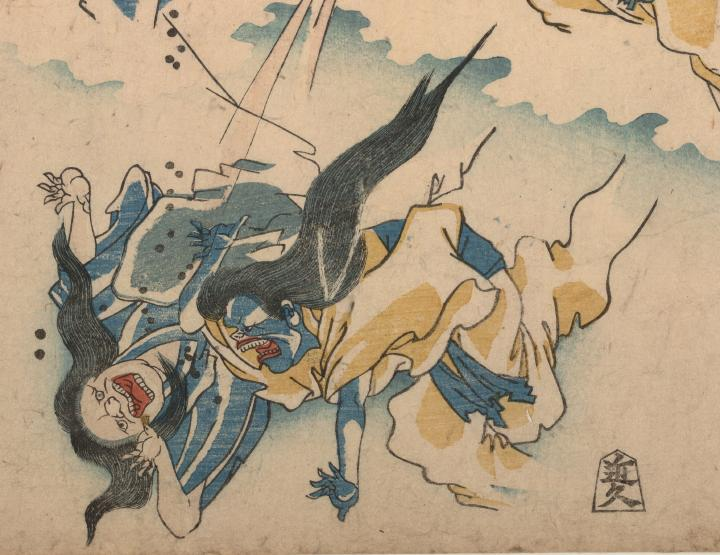

2体の麻疹の神。奥は肌が白く、口を大きく開いて苦悶の表情を浮かべている。手前は肌が青く、必死に逃げようと左手を前に突き出している。
著作者：落合芳幾／出典：親書誌：U426_nichibunken_0010：はしか養生草；ハシカヨウジョウグサ／日付：2006／資源識別子：U426_nichibunken_0010_0001_0001
Copyright (c)2010- International Research Center for Japanese Studies, Kyoto, Japan. All rights reserved.